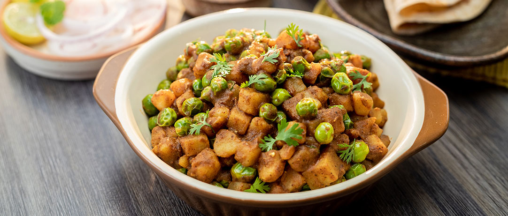

Aloo Matar
Ingredient
- Potatoes 4 medium, cut into 1 inch cubes.
- Peas 1 1/2 cups, shelled.
- Oil 2 tablespoons.
- Cumin Seeds 1 teaspoon.
- Ginger 1 inch piece, cut into juliennes.
- Green Chilli Powder 1, silt.
- Red Chilli Powder 1 teaspoon.
- Turmeric Powder 1/2 teaspoon.
- Coriander Powder 1 1/2 teaspoon.
- Maggi Masala-ae-Magic 1 sachet.
- Garam Masala Powder 1 teaspoon.
- Salt to taste.
- Coriander Leaves 2 tablespoons, chopped.

Methods
- Heat oil in a pan and add cumin seeds. When it starts
to crackle, add ginger and green chilli. Stir-fry for
a minute. Then, add the green peas and potatoes. Cook
till done
- Add red chilli powder, termeric powder, salt, garam
masala and coriander powder. Stir-fry on slow heat for
2 minutes.
- Sprinkle Maggi MAsala-ae-Magic and mix well. Garnish
with chopped coriander leaves and serve hot.